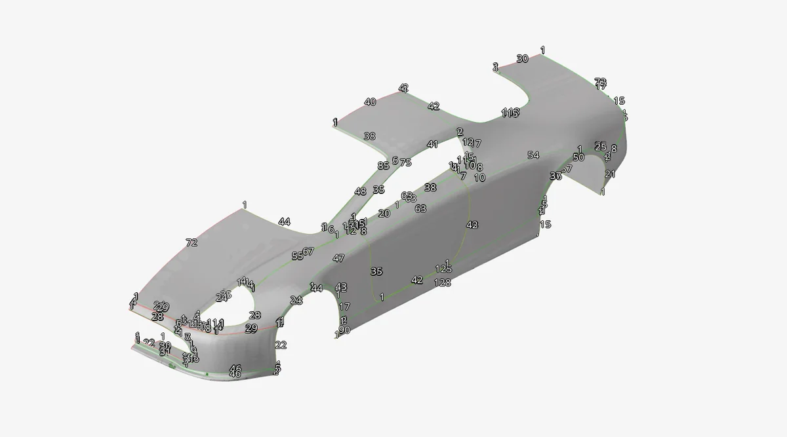
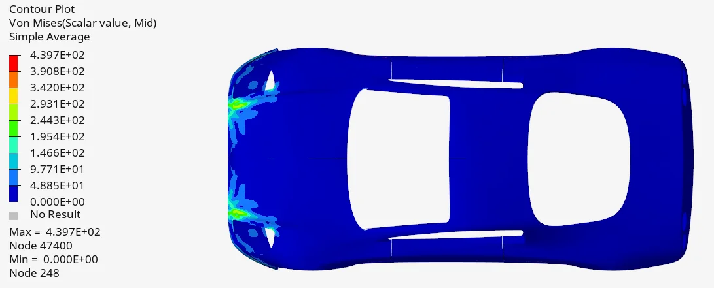
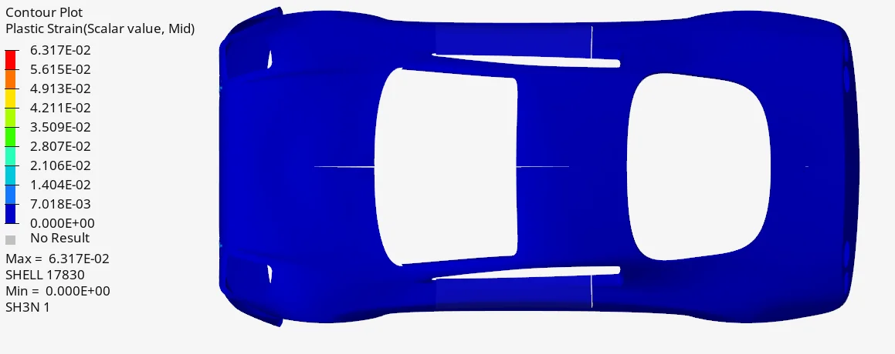
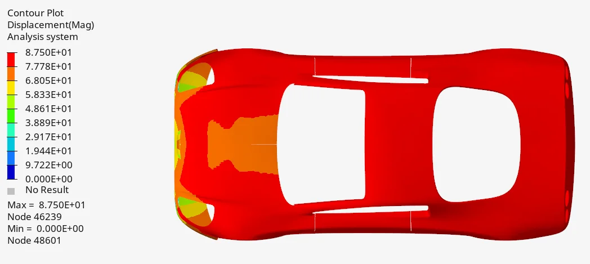
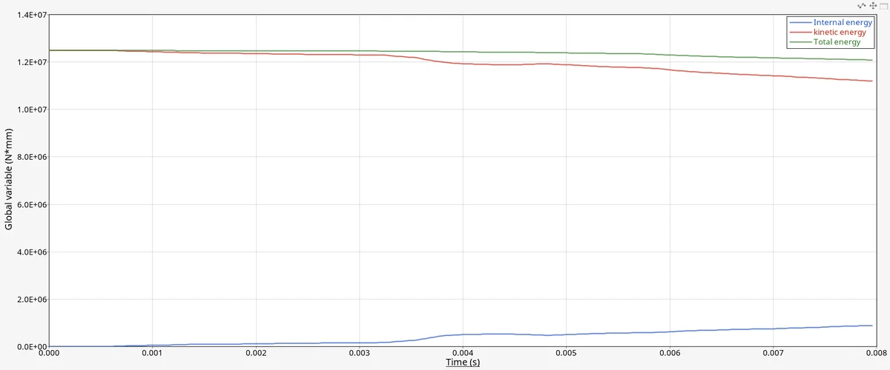

May 2024 · Vehicle Structural Design module, EUSS · Team of three
Explicit frontal crash simulation of a vehicle body
We meshed half of a car body as shells in Altair HyperMesh and ran explicit frontal impacts into a wall at 10 and 20 m/s in Radioss, with an elastic-plastic high-strength steel. Doubling the speed nearly doubled the peak displacement and more than doubled the peak plastic strain, while peak stress barely moved.
- Altair HyperMesh
- Altair Radioss

- 87.5 → 164.6 mm Peak displacement, 10 to 20 m/s (+88.11 %)
- 0.029 → 0.063 Peak plastic strain, 10 to 20 m/s (+117.59 %)
- 440 → 448 MPa Peak von Mises stress (+1.86 %), against a 450 MPa yield
- ≈ 2.5 min Run time per case, 152 and 154 s
01Model and mesh
The aim was to apply crash-structure theory with a non-linear material and to set up the boundary conditions of an explicit impact. To keep the model manageable we used half of the car and replaced each part's inner and outer faces with a single midsurface, removing the thickness from the geometry. We removed the side door, then stitched new surfaces across the gaps it left between parts, and added surfaces around the round rear-light openings so the quad mesh would not fail where it met them.
We meshed every part at 15 mm, the smallest size the student licence's node limit allowed, then fixed warpage and minimum-length failures part by part by adjusting the edge seeding. One lesson cost us time: the first full mesh was built in the OptiStruct profile instead of Radioss, and it had to be converted before it would run.
| High-strength cold-rolled steel | Value |
|---|---|
| Density | 7,900 kg/m³ |
| Young's modulus | 200 GPa |
| Poisson's ratio | 0.3 |
| Yield strength | 450 MPa |
| Ultimate strength | 780 MPa |

02Results
| Quantity | 10 m/s | 20 m/s | Change |
|---|---|---|---|
| Peak von Mises stress [MPa] | 439.7 | 447.9 | +1.86 % |
| Peak displacement [mm] | 87.5 | 164.6 | +88.11 % |
| Peak plastic strain [–] | 0.029 | 0.0631 | +117.59 % |
- Stress concentrates beside the headlamp openings, next to the radiator opening, where there is the least material to carry the load. At 20 m/s the high-stress area grows, but the peak stays almost the same. The peak sits just below the 450 MPa yield strength.
- Plastic strain is highest where the body meets the wall first, the regions absorbing the most energy. It more than doubles at the higher speed.
- Displacement is largest at the parts furthest from the wall, while the points that hit the wall first barely move.



03Checks
We checked the total energy balance in each case, the mesh for discontinuities between neighbouring elements, and the run times. Total energy stayed constant through both runs. One small discontinuity remained at the front of the car, caused by the part's design. Both cases ran in about two and a half minutes on the same mesh, so a finer mesh would have been affordable.

04Limitations and next steps
- Simulated duration. Both runs end at about 8 ms, with most of the kinetic energy not yet absorbed. At 10 m/s the car travels about 80 mm in 8 ms, close to the 87.5 mm peak displacement, so the displacement plot mostly shows the body still moving rather than crush depth. The next run should continue until the kinetic energy is close to zero or the body rebounds.
- Mesh. 15 mm elements were set by the licence limit, not by a convergence study. Refining the front structure, where the strain gradients are, is the obvious step given the short run times.
- Energy checks. A constant total energy is necessary but not enough. Hourglass and contact energy should also be tracked as fractions of the total to confirm the solution is physical.
- Stress averaging. The stress contours use simple nodal averaging, which smooths out element peaks. That is why the plotted peak sits just under yield while plastic strain is present. Element values should be checked against yield directly.
- Model simplifications. Removing the door and the thickness of each part changes the load paths and stiffness, so the results compare the two speeds rather than predict a real crash.
Tools: Altair HyperMesh (shell meshing), Altair Radioss (explicit solver).
Source: P2: Frontal impact analysis, Vehicle Structural Design, EUSS, 9 May 2024.